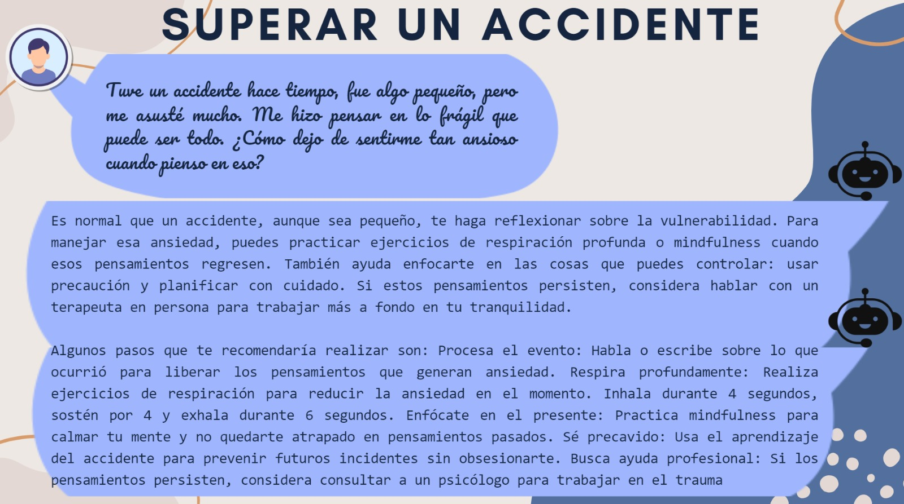
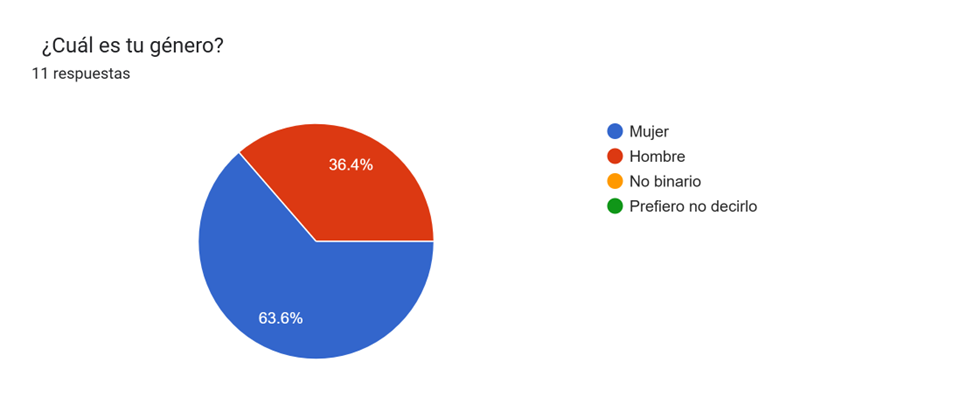

GUÍA PERSONALIZADA PARA ESTUDIANTES // Hecho con ChatGPT
Gestión del Estrés El estrés es una reacción natural del cuerpo ante las demandas escolares, pero si se maneja de forma adecuada, puede convertirse en una herramienta para el crecimiento personal. Aquí te dejamos algunas estrategias para reducir y controlar el estrés:
- Organiza tu tiempo: Crea un horario semanal donde establezcas momentos fijos para el estudio, el descanso y el ocio. Usa aplicaciones de organización como Google Calendar o Trello.
- Practica la respiración profunda: Cuando sientas que la tensión aumenta, cierra los ojos e inhala profundamente por la nariz, retenlo unos segundos y exhala lentamente por la boca. Repite esto 5 veces.
- Dedica tiempo a actividades de relajación: La música, la lectura, los pasatiempos y el ejercicio físico ayudan a liberar tensión.
- Establece límites: No aceptes más responsabilidades de las que puedas manejar. Aprende a decir "no" cuando sea necesario.
Organización de Tareas La sobrecarga de tareas escolares puede generar sensación de agobio. Para evitar esto, te proponemos las siguientes prácticas:
- Divide las tareas grandes en pasos más pequeños: Esto te ayudará a sentir que avanzas poco a poco y evitará la procrastinación.
- Prioriza las tareas más importantes: Identifica qué tareas tienen una fecha de entrega próxima o mayor peso en tu calificación y dales prioridad.
- Usa listas de tareas (to-do lists): Escribe cada día una lista con todas las actividades pendientes y táchalas a medida que las completes.
- Evita la multitarea: Trabajar en varias cosas al mismo tiempo reduce la eficiencia. Mejor, concéntrate en una tarea a la vez.
Control Emocional El control de las emociones es fundamental para enfrentarte a situaciones de presión, como los exámenes o las presentaciones escolares. Estas estrategias pueden ayudarte a fortalecer tu control emocional:
- Reconoce tus emociones: Tómate un momento para identificar cómo te sientes y qué ha causado esa emoción. Saber qué sientes es el primer paso para gestionarlo.
- Práctica la atención plena (mindfulness): Concéntrate en el presente sin juzgar tus pensamientos. Existen aplicaciones como Headspace o Insight Timer que te pueden guiar.
- Desarrolla el autocuidado emocional: Dedícate tiempo para descansar, hablar con amigos o practicar actividades que te hagan sentir bien.
- Busca apoyo: Si sientes que no puedes controlar tus emociones, no dudes en hablar con un docente, orientador o profesional de la salud emocional.
Resolución de Problemas Tener la capacidad de enfrentar los problemas con creatividad y flexibilidad es esencial para la vida académica y personal. Aquí te dejamos algunos pasos para resolver problemas de forma efectiva:
- Define el problema: Asegúrate de entender exactamente qué está ocurriendo antes de buscar una solución.
- Genera alternativas: Piensa en todas las posibles soluciones, incluso aquellas que parezcan poco probables.
- Evalúa las opciones: Analiza las ventajas y desventajas de cada solución posible.
- Aplica la solución y revisa el resultado: Pon en práctica la solución elegida y, si no funciona, intenta otra de las alternativas que habías considerado.
Recursos adicionales
- Plataformas de apoyo: Puedes acceder a recursos en línea como Khan Academy o Coursera para complementar tus conocimientos.
- Apps para la salud mental: Aplicaciones como Calm o BetterHelp pueden ofrecerte apoyo emocional.
- Grupos de apoyo escolar: No estás solo. Busca grupos de estudio con tus compañeros o participa en actividades extracurriculares que te permitan compartir experiencias.
Esta guía está diseñada para ayudarte a ser más fuerte y eficiente en tu vida escolar. Recuerda que no todo tiene que hacerse solo. La ayuda de amigos, familiares y orientadores también es parte importante del proceso de aprendizaje y superación personal.
Recomendaciones de ChatGPT ante un problema

Encuesta niveles de estrés y resiliencia hecha con ChatGPT
Resultados de la encuesta aplicada
